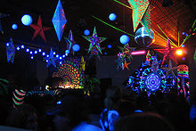

Psychedelic trance, psytrance, or psy is a subgenre of trance music
characterized by arrangements of rhythms and layered melodies created by high tempo riffs.
The genre offers variety in terms of mood, tempo, and style. Some examples include
full on,
darkpsy,
forest,
minimal (Zenonesque),
acid trance,
goa trance,
suomi,
psy-chill psycore
(fusion of psychedelic trance and hardcore), psybient (fusion of psychedelic trance and ambient),
psybreaks, or "adapted" tracks from other music genres. Goa trance preceded psytrance; when digital
media became more commonly used psytrance evolved. Goa continues to develop alongside the other genres.